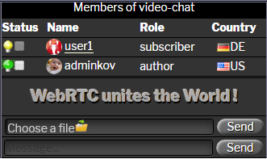

Instructions d'utilisation du plugin de chat vidéo WP-WebRTC2
Interface graphique du plugin
La vue générale du plugin de chat vidéo est présentée ci-dessous sous forme de 7 zones graphiques:

1. Bannière de plugin:
Au milieu de la bannière se trouve un pentagramme d'icônes de navigateur avec lesquelles ce plugin fonctionne: Google Chrome, Fire Fox, Edge, Opera, Yandex.
2. Fenêtre des visiteurs enregistrés du site Web:

Il s'agit d'une liste de tous les visiteurs enregistrés du site.
Dans le champ “Status” – la couleur de l'ampoule signifie:


3. Fenêtre de gestion de plugin:

inviter l'interlocuteur à un chat vidéo
exclure l'interlocuteur du chat vidéo
minuteur de compte à rebours
démarrer le chat vidéo
mettre fin au chat vidéo
commencer à enregistrer le chat vidéo
mettre fin à l'enregistrement du chat vidéo
note: après avoir appuyé sur le bouton Start l'enregistrement d'un chat vidéo, l'interlocuteur invité recevra un message indiquant que l'appel vidéo est en cours d'enregistrement par son interlocuteur.Lors de l'enregistrement d'un chat vidéo, les événements suivants se produisent :
1. Enregistrement d'un flux audio et d'un flux vidéo de deux partenaires de chat vidéo.
2. Enregistrement les messages texte de deux partenaires de chat vidéo.
3. Enregistrement du processus de dessin sur la planche à dessin de deux interlocuteurs de chat vidéo.
4. Après avoir cliqué sur le bouton Arrêter (arrêter l'enregistrement du chat vidéo), l'utilisateur sera invité à enregistrer le résultat de l'enregistrement du chat vidéo au format .webm sur le disque local.
4. Fenêtre avec une liste de deux participants au chat vidéo:

Dans la première ligne du tableau - le propriétaire de la salle de réunion, invitant l'interlocuteur. Si vous cliquez sur son nom, vous serez redirigé vers son profil. Le bouton "Choose file" permet de sélectionner un fichier et de le transférer à l'interlocuteur. Sélectionnez un fichier et cliquez sur le bouton Envoyer. Une barre de progression apparaîtra pendant le transfert du fichier vers l'interlocuteur. Champ "message" - saisissez-y un message et cliquez sur le bouton Envoyer.
5. Fenêtre combinée pour afficher les messages en cours:

bouton "Chat" - le mode d'affichage des messages du répondeur, les participants du chat vidéo.

bouton "Clear" - effacer la boîte de message sélectionnée.
bouton "Report" - enregistre les messages des texte du répondeur et des participants au chat vidéo ou le protocole de prise de contact dans un fichier externe au format HTML.

6,7 Deux fenêtres pour afficher les flux vidéo et audio de deux participants au chat vidéo:

La première fenêtre du flux vidéo est le propriétaire de la salle de réunion. En cliquant sur son nom, vous accéderez à son profil. Le numéro de fenêtre est situé dans le coin supérieur gauche de chaque fenêtre de flux vidéo. En cliquant dessus, vous pouvez augmenter la taille de la fenêtre avec l'affichage du mode "image dans l'image". Une nouvelle pression ramènera la fenêtre à sa position d'origine. Lorsque vous passez le curseur de la souris sur le numéro de la fenêtre, un menu apparaît - en passant au mode d'affichage de l'écran de l'ordinateur ou vice versa - en allumant la webcam. Le contrôle de l'interface est conçu de telle manière que les boutons avec des étiquettes blanches ne seront pas disponibles. La logique intégrée du comportement du plug-in change la couleur des étiquettes des boutons en vert ou en rouge et sera disponible le cas échéant. Cela vous permet d'éviter les situations d'urgence lorsque le plugin est mal contrôlé par l'utilisateur. (attention importante : l'administrateur du site ne participe pas au chat vidéo pour des raisons de sécurité, afin d'éviter que son identifiant ne soit montré à tous les autres visiteurs du site).
Un participant au chat vidéo peut agrandir sa fenêtre ou la fenêtre de l'interlocuteur en cliquant sur le cercle (1) ou (2) avec l'affichage du mode image dans l'image. Une nouvelle pression remet la vitre dans sa position d'origine.
 Lorsque vous passez la souris sur le cercle (1), un menu déroulant de deux éléments apparaît: screen(ou- webcam) et board(ou- no board)
Lorsque vous passez la souris sur le cercle (1), un menu déroulant de deux éléments apparaît: screen(ou- webcam) et board(ou- no board)
- screen/webcam - bascule l'écran de l'autre partie pour partager votre écran ou passer à la webcam.
- board/no doard - active ou désactive le mode tableau blanc interactif pour le dessin.
8 Profil d'utilisateur enregistré:

Article ajouté au profil de l'utilisateur - Users for Video chat. En cas d'un grand nombre d'utilisateurs enregistrés du site, dans ce paragraphe, pour plus de commodité, l'utilisateur peut créer son propre Contact List pour le chat vidéo.

Article ajouté au profil de l'utilisateur - Email:
1. Envoyer des messages de le répondeur automatique de chat vidéo à mon adresse e-mail
2. Envoyer des messages texte de session de chat vidéo à mon adresse e-mail
Comment établir une connexion vidéo
1. Accédez à la page du site sous votre identifiant, où le shortcode est défini [webrtc2]
2. Dans la fenêtre des visiteurs enregistrés sur le site, cochez la case de l'utilisateur avec lequel vous souhaitez établir une connexion vidéo et cliquez sur le bouton => (inviter l'interlocuteur au chat vidéo).
2.1 Si l'ampoule de l'utilisateur sélectionné est bleue, cela signifie qu'il n'y a pas d'utilisateur pour le moment. Dans ce cas, vous ne pouvez lui laisser un message sur le répondeur automatique qu'en saisissant un message dans le champ message et en appuyant sur le bouton Send.
2.2 Si le lampe de l'utilisateur sélectionné est jaune, l'utilisateur est présent - recevra une sonnerie. Pour savoir qui appelle, cet utilisateur peut déplacer le curseur de la souris sur le feu vert dans la fenêtre des visiteurs enregistrés du site.
2.3 Si l'utilisateur que vous appelez accepte de répondre à votre appel, il cochera votre identifiant et appuiera sur le bouton => (inviter l'interlocuteur au chat vidéo). Après quelques secondes - les deux participants à l'appel vidéo recevront un signal sonore Hello et le bouton vert clignote Start. Les deux participants au lien vidéo appuient sur le bouton Start et le processus d'établissement d'un lien vidéo commencera. (~ 10 сек).
2.4 Si l'utilisateur que vous avez appelé n'accepte pas de répondre à votre appel, alors après 60 secondes. votre appel sera automatiquement annulé.
3. Pendant l'appel vidéo, vous pouvez:
3.1 Échangez des messages.
3.2 Envoyez des fichiers les uns aux autres.
3.3 Partagez votre écran les uns avec les autres.
3.4 Utilisez une planche à dessin interactive.